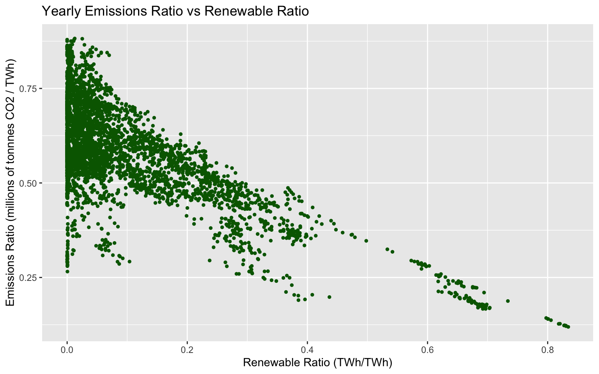

Chapter 5 Results
5.1 Emissions and Renewables
Overall, CO2 emissions have been steadily increasing across the globe.
df %>%
group_by(year) %>%
summarise(total_co2 = sum(co2)) %>%
ggplot(aes(x=year, y=total_co2)) +
geom_line(color="tan4", size=1) +
ggtitle("Total CO2 Emissions 1965-2018") +
labs(x = "Year", y = "CO2 Emissions (millions of tonnes)") 
Focusing on a specific country, we can see that the United States’ CO2 emissions have also been increasing, with slight occasional drops.
ggplot(df[df["country"] == "United States",], aes(x=year, y=co2)) +
geom_line(color="darkred", size=1) +
ggtitle("US CO2 Emissions 1965-2018") +
labs(x = "Year", y = "CO2 Emissions (millions of tonnes)") 
Intuitively, the increase in emissions correlates with the growth of the United States. As population and industry increases, emissions end up increasing due to the increased power demand of the country. However, if we look at the amount of CO2 generated for each unit of power produced for the US, a different image appears.
ggplot(df[df["country"] == "United States",], aes(x=year, y=emission_ratio)) +
geom_line(color="darkgreen", size=1) +
ggtitle("US CO2 Emissions Ratio 1965-2018") +
labs(x = "Year", y = "CO2 Emissions Ratio (millions of tonnes/TWh)") 
This plot shows that the United States’ emissions ratio (millions of tonnes of CO2 emitted per each TWh generated) has been decreasing throughout time. This decrease implies that the US is becoming more CO2 efficient when generating power and can be due to a variety of factors, such as switching to more renewable energy sources and increaseing the efficiency of both renewable and non-renewable energy generation. We can see the relationship between the decreasing emission ratio and switching to renewable energy sources by plotting the US’s renewable ratio, which is the percent of energy consumed that was generated from renewable sources.
ggplot(df[df["country"] == "United States",], aes(x=year, y=renew_ratio)) +
geom_line(color="darkblue", size=1) +
ggtitle("US Renewable Ratio 1965-2018") +
labs(x = "Year", y = "Renewable Ratio (TWh/TWh)") 
The sharp increase in the US’s renewable energy usage around 2010 seems to match with the sharper decrease in the emissions ratio. These plots show that while the US is still emitting large amounts of CO2, they are making changes to reduce the amount of CO2 released during power generation.
Interestingly, this relationship between the renewable ratio and emissions ratio appears not just in the US, but across the globe. The plot below plots each country’s yearly emissions ratio versus their renewable ratio. There is a noticeable downward trend in the plot, suggesting that as a country’s renewable ratio increases (meaning they switch to more renewable energy sources), their emissions ratio decreases (meaning they release less CO2 per unit power generated).
ggplot(df, aes(x=renew_ratio, y=emission_ratio)) +
geom_point(color="darkgreen", size=1) +
ggtitle("Yearly Emissions Ratio vs Renewable Ratio") +
labs(x = "Renewable Ratio (TWh/TWh)", y = "Emissions Ratio (millions of tonnnes CO2 / TWh)") 
Additionally the large number of points on the left side of the plot is likely the result of countrys’ having a low renewable ratio. These countries with low renewable ratios likely won’t see a impact on their emissions as a result of renewables because of the low amount of renewable energy. As a result, there isn’t a relationship between renewables and emissions when renewables is close to zero, so the emissions ratios for these low renewable energy countries varies widely. However, when moving toward higher renewable ratios, the downward trends begins appearing.
5.2 Why did CO2 emissions in China grow?
Main Events:
China joins the World Trade Organization, giving rise to higher demand in exports and higher consumption in coal energy to keep up with global productions, causing CO2 to rise.
Around 2014, China expands into more renewable energy and nuclear power; reducing demand for coal factories and causing CO2 to fall.
Around 2017, higher demand for exports caused coal consumption to increase and surpass renewables, causing CO2 to rise.
Increasing Renewables => Reduces demand for Coal => Reduces CO2 emissions.
Source: https://www.carbonbrief.org/guest-post-chinas-co2-emissions-grew-slower-than-expected-in-2018
china_df %>%
ggplot(aes(time, China,)) +
geom_line(color="darkred", size=1) +
geom_vline(xintercept = 2001) +
geom_vline(xintercept = 2013) +
geom_vline(xintercept = 2016) +
annotate("text", x = 1998, y = 8000, label = "Event 1") +
annotate("text", x = 2010, y =6000, label = "Event 2") +
annotate("text", x = 2018.8, y =4000, label = "Event 3") +
ggtitle("Total CO2 Emissions 1965-2018 in China") +
labs(x = "Year", y = "CO2 Emissions (millions of tonnes)") 
5.3 Energy Sources by Continents
Focusing on continents, we look at 5 main sources of energy: natural gas, coal, nuclear and renewables, measured in Million tonnes of oil equivalent (Mtoe) in 2018 as a PCP chart using the GGally package. Each line is colored by their continents on the right, and the corresponding countries are listed on the left. The main trends are as follows:
- European countries tend to rely less on oil, natural gas and coal (non-renewebles) compared to counterpart countries in asia pacific and north america.
- African, Middle Eastern, Central American and CIS (Commonwealth of Independent States) countries generates the least energy across all spectrums of energy sources, with the exception of countries such as Brazil relying on renewables and Russia relying on natural gas.
- North america, mainly the US, generates the most energy across oil, natural gas and nuclear energy. The only country that matches the US in terms of volume is China, which generates the most energy across coal and renewables.
5.4 A Closer Look at Solar and Wind Energy
Renewable energy = Solar + Wind + Others (Hydro, Biomass, Biofuels).
One of the largest proportions and fastest growing sources of renewable energy is Solar and Wind. Focusing on these two, we measure how countries performed in 2018 using a cleveland dot plot on Countries versus Energy Generation (Terawatt Hours), faceted on their Continents.
The main trends are that Europe as a whole tends to rely on Solar/Wind energy consistently; whilst individual countries such as US, China, Brazil, Germany, Japan have contributed the most Solar/Wind energy by a large margin compared to the rest in their corresponding Continents. Japan is the only country that has a higher generation of Solar energy as compared to Wind energy by a relatively large margin.
# Plot cleveland
ggplot(renewables_generation_df, aes(x = generation, y = reorder(country, generation))) +
geom_line(aes(group = country)) +
geom_point(aes(color = energy_type)) +
facet_grid(continent ~ ., scales = "free", space = "free") +
geom_text(data = right_label, aes(color = energy_type, label = round(generation, 0)), size = 3, hjust = -.5) +
geom_text(data = left_label, aes(color = energy_type, label = round(generation, 0)), size = 3, hjust = 1.5) +
labs(title = "Solar and Wind energy across Countries and Continents in 2018", subtitle="Source: BP Statistical Review of World Energy 2019") +
ylab("") +
xlab("Energy generation in Terawatt hours (TWh)") +
xlim(0, 400) +
theme_dotplot